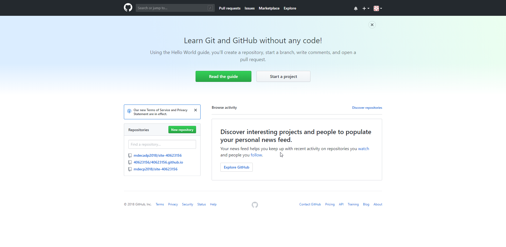
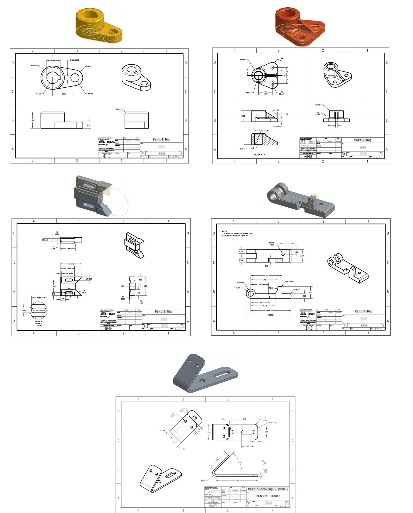

Week1 << Previous Next >> Week3
Week2
1.ShareX截圖
Ctrl +Print Scr

2.管理CMSimfly 作業倉儲
Onshape作業:

影片:
W2
心得:
學到了很多印象中電腦輔助設計學不到的東西，第一周上課時對Github完全無法理解，在這周反覆問了很多次才了解Github到底是什麼。在Onshape經過多次的摸索雖然Onshape不像Soildwork ,Catia或Inventor有很大的靈活運用間，不過在選擇功能的部分單純很多。
Week1 << Previous Next >> Week3